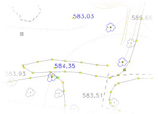
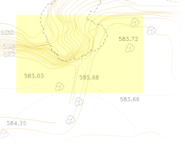
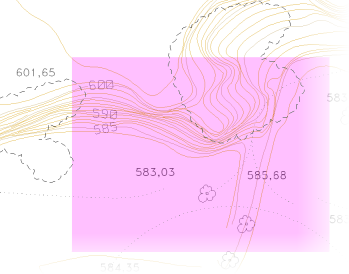
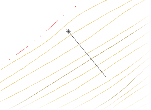
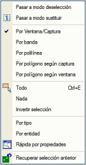
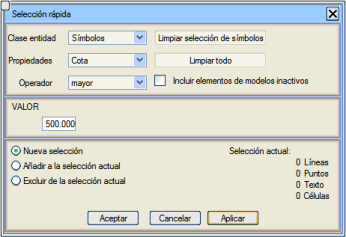
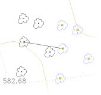
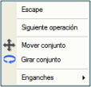
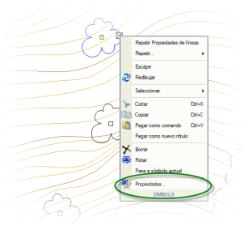

| |
|
NESNE SEÇİMİ. TUTAMAÇLAR VE ÖZELLİKLER
|
|
Diğer Seçim/Seçimden Çıkarma Modları ve Komutları
Tutamaçlar. Hızlı Taşıma ve Döndürme Grafik Nesnelerin Özellikleri Genel Bilgiler Nesne seçimi, çizim nesnelerinin toplu olarak düzenlenmesine ve silinmesine olanak tanıdığı için bu işlemleri büyük ölçüde hızlandırır. Eğer seçim yöntemleri mümkün olduğunca esnekse, kullanıcının verimliliği de önemli ölçüde artar. ISTRAM®/ISPOL®, doğrudan fare ile veya çeşitli menüler aracılığıyla farklı seçim yöntemlerini destekler. Ayrıca, seçimden çıkarma işlemi anlıktır, çünkü seçimi tamamen iptal etmek için <Esc> tuşuna veya içerik menüsündeki İptal seçeneğine basmak yeterlidir. Bir nesne seçildiğinde rengi değişir ve köşe noktaları ile yerleştirme noktaları Ekran modunda küçük mavi karelerle veya Yazdırma modunda sarı karelerle vurgulanır. Bu karelere tutamaçlar denir. İmleçle, Pencereyle, Kesen Pencereyle ve Bantla Seçim Bir nesneyi (çizgi, sembol, metin veya yazı) seçmenin en basit yolu, fare imlecini üzerine getirip ana düğmeye basmaktır. O anda nesne seçilmiş olur. Pencere ile seçim, farenin ana düğmesine seçim dikdörtgeninin sol üst veya alt köşesi olacak yere tıklayarak başlar ve ardından düğmeyi bırakmadan imleci sağa doğru sürükleyerek yapılır (dikey yön fark etmez). O zaman, seçim işleminin başladığını belirten mavi (Ekran modunda) veya sarı (Yazdırma modunda) renkli seçim dikdörtgeni belirir ve fare bırakıldığında işlem tamamlanır; tüm tutamaçları seçim dikdörtgeninin içinde olan nesneler seçilmiş olur. 
Kesen pencere ile seçim, öncekinden farklı olarak, ana düğmeye seçim dikdörtgeninin sağ üst veya alt köşesinde basılması ve sola doğru sürüklenmesiyle yapılır. Bu durumda, seçim dikdörtgeni yeşildir (Ekran modunda) veya pembedir (Yazdırma modunda) ve seçilen nesneler, tutamaçlarından herhangi biri seçim dikdörtgeninin içinde olan tüm nesneler olacaktır. Bant ile seçim, <Ctrl> tuşunu basılı tutarak ekranda bir noktaya tıklayıp, farenin ana düğmesini basılı tutarak imleci hareket ettirerek, fare düğmesi bırakıldığında üzerinden geçilen tüm nesnelerin seçildiği bir segment çizmektir. Bazı durumlarda, örneğin Bant ile Çizgileri Sil seçeneğinde olduğu gibi, bu seçim şekli otomatik olarak etkinleştirilir. 
Seçim Modları Düzenle → Seç menüsünden ve içerik menüsündeki Seç seçeneğinden erişilebilen seçim modları şunlardır:
Diğer Seçim/Seçimden Çıkarma Modları ve Komutları Önceki bölümde belirtilen seçim yöntemleri en yaygın olanlar olsa da, bazen daha gelişmiş kriterler gerekebilir. Bunlar Düzenle → Seçim menüsünde (içerik menüsünden de erişilebilir) gruplandırılmıştır ve aşağıda detaylandırılmıştır:
Düzenle → Seçimi Kaldır menüsünden de nesneleri sınıflara göre seçimden çıkarmak mümkündür.
Bunun için ilgili nesne sınıfı (çizgiler, semboller, metinler veya hücreler), karşılaştırılacak özellik (tip, model, kot,...), karşılaştırıcı (eşit, büyük, farklı,...) ve özelliğin sayısal değeri belirtilir. Böylece, resimdeki örnekte ve [Tamam] veya [Uygula] butonuna basıldıktan sonra, kotası 500 m'den büyük olan tüm semboller seçilecektir.
Pasif modellerdeki nesneleri dahil et seçeneği işaretlendiğinde, pasif modellere ait olan nesnelerin, görünür olmasalar bile, seçilmesi sağlanır. Varsayılan olarak, bu menüden bir seçim yapıldığında, önceki seçim iptal edilir ve yenisiyle değiştirilir (Yeni seçim seçeneği). Ancak, yeni seçimin öncekine eklenmesi (Mevcut seçime ekle) veya seçimden çıkarılması (Önceki seçimden hariç tut) mümkündür. Her an, seçilen çizgi, sembol, metin ve hücre sayısı hakkında da bilgi verilir.
Tutamaçlar. Hızlı Taşıma ve Döndürme Daha önce açıklandığı gibi, bir veya daha fazla nesne seçildiğinde, çizgilerde köşe noktalarına ve diğer nesnelerde yerleştirme noktalarına denk gelen tutamaçları gösterilir. Eğer seçilen nesne sayısı veya nesne başına tutamaç sayısı çok yüksekse, verimlilik nedenleriyle gösterilmezler. Tutamaçlar, küçük mavi (Ekran modunda) veya sarı (Yazdırma modunda) dikdörtgenler şeklinde somutlaşır ve fare imleci ile seçildiğinde hareket ettirilebilme özelliğine sahiptir. Ayrıca, bir tutamaç seçildikten sonra <Boşluk> tuşuna basılırsa, doğrudan seçili grubun tamamını taşımaya geçilir ve tekrar basılırsa grubun döndürme eylemi etkinleştirilir. Üçüncü bir basış, sadece tutulan nesneyi taşıma eylemine geri döner. Eğer bu eylemler <Ctrl> tuşu basılıyken yapılırsa, farenin ana düğmesine tıklandığında seçimin kopyaları oluşturulur. Yüzeye yakalama etkinleştirilmişken bir sembol veya çizginin yer değiştirme veya döndürme eylemi gerçekleştirildikten sonra, Yapılandırma → Düzenleme Sırasındaki Davranış → İşleyiş menüsünde Noktaları ve çizgileri taşırken Z yakalama seçeneği etkinse, çizgi/sembol köşe noktalarının kotları yakalama yüzeyine göre enterpole edilir. Açıkçası, yakalama yüzeyine ait olan nesneler kotlarını DEĞİŞTİRMEZ. Bu eylemler, bir tutamaç seçildikten hemen sonra farenin sağ tuşuna basıldığında görünen içerik menüsü aracılığıyla da kullanılabilir. Son olarak, bir polilinin ucundaki tutamaç diğer ucun üzerine getirilirse, otomatik olarak kapanır ve kapalı bir çizgi ve dolayısıyla bir kapalı alan oluşturur. Eğer tutamaç başka bir çizginin ucuna getirilirse, herhangi bir yakalama modunu etkinleştirmeye gerek kalmadan onları birleştirir. Programın bu varsayılan davranışı da Yapılandırma → Düzenleme Sırasındaki Davranış → İşleyiş menüsünden yapılandırılabilir ve Bir köşe noktasını diğerinin üzerine taşırken bölümünde belirlenenlere bağlıdır. Grafik Nesnelerin Özellikleri Eğer etkin bir nesne seçimi varsa ve farenin sağ tuşuna basılırsa, görünen içerik menüsü Özellikler... adlı bir seçenek içerir. Bu seçenek, seçilen nesnenin (çizgilerin, sembollerin, metinlerin ve hücrelerin) özelliklerini veya birden fazla nesne söz konusuysa, ortak özelliklerini değiştirmeyi sağlayan bir iletişim kutusu açar. Bu iletişim kutusu, belirli bir nesneye çift tıklandığında da açılır (yazılar hariç, bu durumda bu eylem doğrudan metnin düzenlenmesini tetikler). Farklı nesnelerin özelliklerini sırayla elde etmek için çift tıklama kullanıldığında, her nesnenin seçili kalmasını önlediği için Değiştir seçim modunu etkinleştirmek uygundur. Özellikler kutusu, bu kılavuzda her özel durum için uygun şekilde açıklanmıştır. |